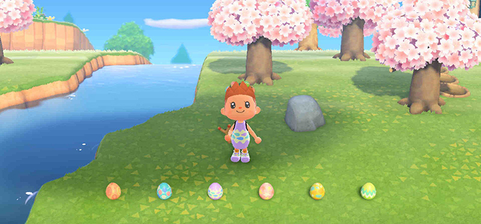
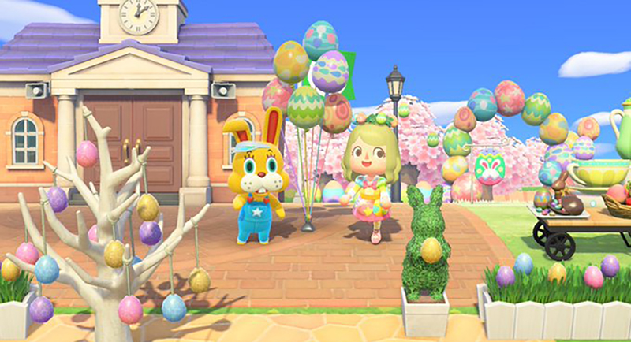
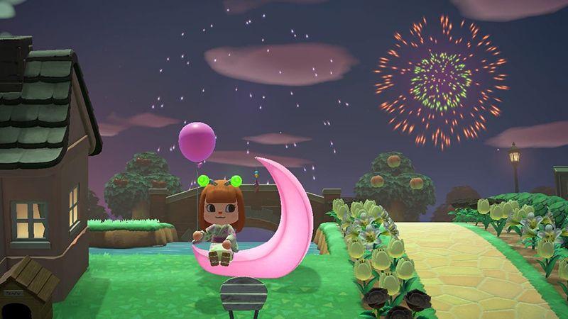
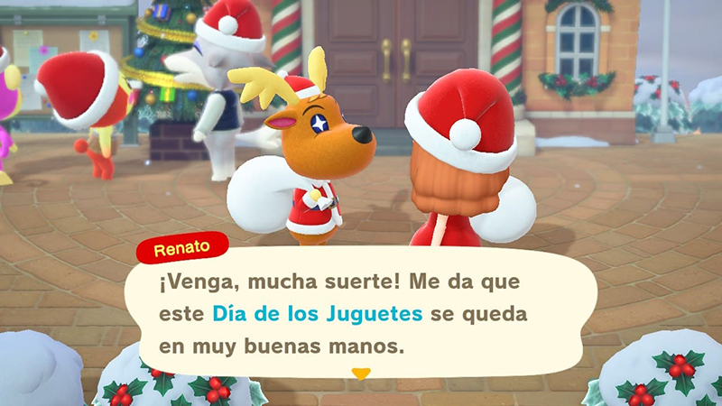

Cerezo en flor:
Cerezo en flor:
Fecha: 1 - 10 de abril.
Durante estas fechas, todos los árboles caducifolios que no tengan frutas cambiarán de color, ya que tendrán pétalos de flores de cerezo, dando un aspecto precioso a nuestra isla. Además, tendremos que estar pendientes, ya que nos podremos encontrar estos pétalos flotando en el aire, y tendremos que recogerlos con nuestra red para poder poder crear nuevos proyectos exclusivos y, además, preciosos y con un toque japonés que nos encanta. Los proyectos que podemos encontrar (tanto en globos como con nuestros vecinos) son:
- Bolsito flor de cerezo.
- Cerezo en flor bonsái.
- Farol flor de cerezo.
- Jarrón con flores de cerezo.
- Paraguas flor de cerezo.
- Pared cerezo.
- Pared cerezos en flor.
- Parqué cerezo.
- Pila de pétalos de cerezo.
- Reloj flor de cerezo.
- Roca con agua y pétalos.
- Set de picnic.
- Suelo cerezos en flor.
- Varita flor de cerezo.
Caza del Huevo:
Fecha: 1 - 12 de abril.
Durante este periodo de tiempo, veremos por la isla a un conejito un tanto curioso, llamado Coti Conejal, que nos dará nuestro primer proyecto del evento y nos contará que vamos a tener que recolectar los distintos tipos de huevos de pascua que hay. Son los siguientes, y aquí os indicamos cómo conseguir cada uno de ellos:

- Acuáticos: pescando.
- Celestes: derribando globos con el tirachinas.
- Terrestres: cavando en el suelo.
- Leñosos: golpeando los árboles con el hacha.
- Rupestres: golpeando las rocas.
- Boscosos: moviendo los árboles en los que aparecen para que caigan.
La idea del evento es ir recolectando todos estos huevos para poder crear proyectos nuevos, que conseguiremos en las botellas que encontramos por la playa una vez al día, en los globos, recogiendo huevos o de nuestros vecinos. Estos proyectos van a ser:

- Alfombra caza del huevo.
- Arco caza del huevo.
- Armario caza del huevo.
- Cama caza del huevo.
- Corona caza del huevo.
- Globo caza del huevo set 1 y 2.
- Guirnalda caza del huevo.
- Guirnalda luz caza del huevo.
- Lámpara caza del huevo.
- Mesa caza del huevo.
- Mochila caza del huevo.
- Pared caza del huevo.
- Reloj caza del huevo.
- Suelo caza del huevo.
- Taburete caza del huevo.
- Tocador caza del huevo.
- Valla caza del huevo.
Finalmente, el día 12 de abril, el último del evento, se celebrará la "Caza del Huevo", donde Coti nos esperará para darnos un proyecto nuevo (siempre que hayamos conseguidos todos los del evento) y, cuando realicemos este, nos dará la “varita Caza del Huevo”. Además, si le entregamos un huevo de cada tipo, también una “Cesta Caza del Huevo”. Y con esto habremos completado el evento completamente.
Día de la Naturaleza:
Fecha: 23 de abril - 4 de mayo.
El día de la Naturaleza es un evento temporal dedicado a cuidar el entorno que nos rodea y el medioambiente de nuestra isla, completando nuevas tareas y recibiendo ciertas recompensas por ello. Para comenzar este evento simplemente tendremos que mirar nuestro buzón, donde Toom Nook nos dirá mediante una carta que tendremos una serie de objetivos nuevos para ganar más Millas Nook, todo relacionado con la naturaleza. Para que nos de acceso a estos nuevos objetivos, deberemos ir al centro de gestión vecinal y hablar con él en persona. Una vez activo, tan sólo tendremos que acceder a nuestro panel de Millas Nook, y podremos ver que tenemos una misión nueva cada día con una hojita verde, y que nos dará 5 veces más millas que con cualquier otra misión.
Cuando completemos estas misiones nuevas de Millas Nook, nuestro querido mapache Toom Nook nos dará un regalo especial: un proyecto de bricolaje de una valla de arbustos seto. Además, también podremos conseguir logros nuevos gracias a este evento, ya que podremos plantar arbustos, algo nuevo que no habíamos conocido hasta ahora.
Otra novedad es la aparición de un nuevo personaje: Gandulio, del cual se habla mejor en la sección de Personajes.
Primero de Mayo:
Fecha: 1 - 7 de mayo.
Para comenzar este mini evento temporal, tan sólo tendrás que acercarte a la oficina de gestión vecinal y hablar con Toom Nook, el cual te dirá que para celebrar el día de los trabajadores, ha preparado una escapade de Primero de Mayo, y que podrás viajar a una isla especial con un billete que tendrás que canjear en el aeródromo, hablando con Rafa. Sólo podrás usar este billete una vez.
Con este billete especial, viajarás a una isla desierta aleatoria, y tendrás que ir con los bolsillos vacíos (luego te devolverán tus cosas, tranquilo). En esa nueva isla encontrarás un laberinto, el cual tendrás que superar para llegar al premio final. Cabe decir que durante todo el laberinto irás obteniendo herramientas para superarlo poco a poco, y que podrás conseguir tickets para canjearlos por bayas. Si en algún momento te atascas, podrás llamar al Servicio de Rescate y la isla se reiniciará (cuesta 100 Millas Nook).
Una vez superado el laberinto, llegarás a encontrarte con un personaje conocido de juegos anteriores: Fran, el cual te dará un premio especial. Ten en cuenta que si decides irte a casa y no has obtenido todo lo que te ofrece el laberinto, luego no podrás volver, así que es recomendable acabarlo al 100%, aunque te lleve algo más de tiempo.
Día Internacional de los Museos:
Fecha: 18 - 31 de mayo.
El único requisito para poder comenzar este evento, aparte de tener actualizado el juego, es tener construido el Museo (podrás ver cómo hacerlo en el apartado de Edificios). Una vez que comience el evento, Canela o Toom Nook te informarán de que debes pasarte por el Museo para hablar con Sócrates, y así saber qué tienes que hacer. La tarea encomendada en este evento será buscar diferentes sellos especiales dentro del edificio, concretamente en las salas de exposiciones de Bichos, Peces y Fósiles. Cada grupo de sellos consta de 3 sellos que necesitamos estampar la tarjeta que nos habrán entregado al comienzo del evento y, cuando la tengamos completa, deberemos llevársela a Sócrates para que nos de nuestro premio especial:
- Recompensa por los sellos de bichos: placa dorada de bicho.
- Recompensa por los sellos de peces: placa dorada de pez.
- Recompensa por los sellos de fósiles: placa dorada de fósil.
Estas placas podremos colocarlas como decoración en las paredes de nuestra casa. Durante todos los días que dura este evento podremos realizar la búsqueda de sellos. Eso sí, el premio que nos dará Sócrates siempre será el mismo, por lo tanto, está en tu manod decidir si realizar el evento una sola vez y conseguir las placas, o si realizarlo una vez al día y luego vendérselas a Tendo y Nendo, consiguiendo unas 900 bayas al día por las tres placas (no es mucho, sí, pero las hipotecas no se pagan solas).
 Temporada de Bodas:
Temporada de Bodas:
Fecha: 1 - 30 de junio.
Al comenzar el evento, Fauno, un curioso fotógrafo, nos llamará a su estudio para comunicarnos que Al y Paca quieren realizar una serie de fotos para su boda, así que tendremos que dirigirnos al aeródromo y poner rumbo a Cayo Fauno. Una vez allí, y durante cada día que dure el evento, podremos viajar a esa isla para realizar una sesión de fotos a los enamorados (los viajes son totalmente gratuitos)
El objetivo del evento es simple: tendremos que hablar con Paca, a continuación decorar la habitación según lo que ella quiera (ceremonia de boda o convite, y los colores que nos diga), y cuando creamos que está todo listo y a su gusto: ¡CLICK!, realizaremos la foto que tanto quieren y se la enseñaremos a ver qué les parece. Si está contenta, te dará un regalito (algún mueble del evento) y joyas amorosas (máximo de 15 usando 20 objetos para la foto), una moneda de intercambio de este evento para poder comprar todo lo que quieras (muebles y ropa de boda). Deberás realizar al menos 7 sesiones de fotos para desbloquear todo el catálogo disponible, y necesitarás al menos 261 joyas para poder adquirirlo por completo. ¡Ánimo y a fotografiar!

Fuegos Artificiales:
Fecha: Todos los domingos del mes de Agosto, a partir de las 19:00h.
Para poder este evento, tendremos que irnos en la fecha arriba especificada a la plaza principal del pueblo. Durante el espectáculo, podrás ver a todos tus vecinos disfrutar del evento, hablar con Canela para que te de algún regalito (cuatro diademas para combinar con nuestros modelitos: de corazones, estrellas, florecillas y luciérnagas), o incluso para pedirle (antes de las 19:00h) que utilice fuegos artificiales personalizados (usando tus propios diseños), y además, ¡podrás participar en la Tómbola de Ladino!
Para participar, tan sólo tendremos que comprar un ticket por 500 bayas, y así obtener seguro alguno de sus premios (hay un total de 12), y la obtención de los mismos está asegurada la primera vez (es decir, que conque participes en la tómbola 12 veces, los obtendrás todos seguro, y a partir de ahí ya irás recibiendo premios aleatorios). Estos premios son:

- Bengala roja.
- Bengala azul.
- Bengala de tubo.
- Globo amarillo.
- Globo azul.
- Globo rojo.
- Globo verde.
- Globo rosa.
- Lanzapompas.
- Molinete.
- Matasuegras.
- Paipay.
 Temporada de Calabazas:
Temporada de Calabazas:
Fecha: A partir de la actualización de octubre de 2020.

Ahora podrás cultivar calabazas para usarlas de decoración o como materiales de fabricación para nuevas recetas. Para conseguir calabazas de vivero, existen dos opciones:
- Comprar en MiniNook: 280 bayas.
- Comprar en el puesto de Gandulio: 140 bayas.
Una vez que las tengas, puedes plantarlas en cualquier lugar con tierra, y deberás regarlas todos los días para que crezcan. Cuando pasen 4 días, tendrás tus calabazas listas para cosechar. Una vez cosechadas, tardan 2 días en volver a brotar. Existen 4 tipos distintos de calabazas que pueden crecer cuando las plantes: naranja, amarilla, blanca o verde. Las de color naranja son las normales para usar en los proyectos de bricolaje, mientras que el resto sirven para personalizar estos proyectos y poder cambiarlos de color.
Halloween:
Fecha: 30 septiembre - 31 octubre.

Aunque el evento dura todo el mes, la verdadera celebración de Halloween es el 31 de octubre, entre las 17:00 y las 0:00h. Durante este evento tendrás que conseguir chuches para la gran noche. Cada día podrás acercarte a MiniNook a comprar una chuche por 120 bayas. Sólo puedes comprar una por día. Además, durante todo el evento podrás conseguir recetas para nuevos proyectos relacionados con la temática, por lo que tendrás que usar las calabazas que has estado cultivando. Estos proyectos los conseguirás como siempre hablando con tus vecinos mientras fabrican objetos o rompiendo globos. Además, la misma noche de Halloween, si le das chuches a tus vecinos, también te regalarán nuevas recetas.
Además, el mismo día 31 aparecerá Soponcio en la isla, y deberás llevar un atuendo acorde a la ocasión como todos tus vecinos para disfrutar de la fiesta en todo su esplendor. Este nuevo personaje te dará más recompensas especiales por entregarle piruletas (las cuales te las darán también tus vecinos por entregarles chuches).
Día del Pavo:
Fecha: 26 de noviembre.
En este evento, que está inspirado en Acción de Gracias, recibiremos en la plaza de nuestra isla a un invitado especial, Guindo, al cual tendremos que ayudar a cocinar 4 platos (tendremos que ayudarle con los ingredientes). Como recompensa, nos dará 4 muebles, pero podremos conseguir recetas nuevas si le llevamos ingredientes extra para darle un toque único a sus platos. Los platos a cocinar y los ingredientes son:

- Sopa de almeja:
- 3 almejas.
- Secreto: vieria.
- Pastel de calabaza:
- 1 calabaza naranja
- 1 calabaza de otro color.
- Secreto: las 2 calabas restantes.
- Gratinado:
- 1 mejillón.
- 1 champiñón.
- Secreto: buey del pacífico.
- Pescado:
- 1 lubina.
- 1 gallo, rodaballo o pargo rojo.
- Secreto: dorada japonesa.
Día de los Juguetes:
Fecha: 1 - 25 de diciembre.

Aunque durante todo este periodo se puede disfrutar de las características del evento, este como tal tiene lugar el 24 de diciembre de 18:00 a 05:00h. Durante el evento podrás comprar juguetes cada día en MiniNook, para después poder repartirlos entre tus vecinos. El día del evento, verás por tu isla a un personaje de lo más curiosos, Renato, que te pedirá ayudar para llevar a cabo su tarea durante ese día: ¡repartir regalos a todo el mundo!
Una vez que hables con él te dará la receta de papel de regalo. Tendrás que fabricar 3 para que te de la bolsa mágica y así repartir los regalos de Papá Noel entre todos tus vecinos, y unos calcetines para colgar en tu casa. Según vayas repartiendo los regalos, irás consiguiendo recompensas y nuevos objetos del evento (algunas veces serán los mismos juguetes que hayas comprado pero de colores diferentes). Los calcetines deberás colgarlos en tu casa esa misma noche para tener una sorpresita cuando te levantes el día 25: una foto del mismísimo Renato.